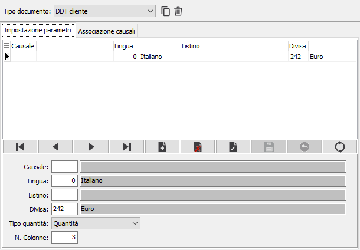
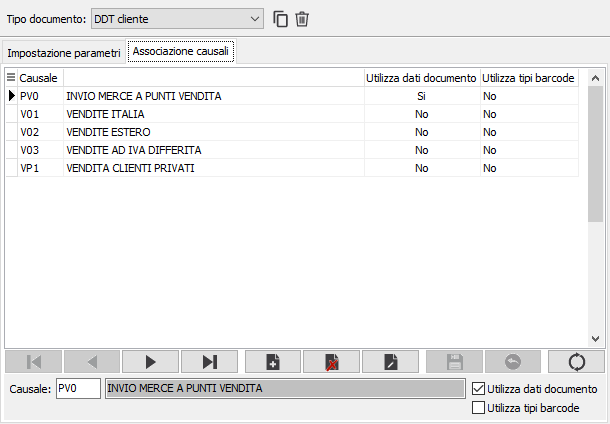

Configurazione etichette barcode
La procedura consente di configurare per quali documenti o per quali singole causali documento deve essere eseguita, al termine dell'inserimento dopo la fase di stampa, la stampa delle etichette con codice a barre. La manutenzione è divisa in due pagine:
la pagina Impostazione parametri consente di specificare per il tipo di documento e/o la singola causale, in base alla presenza o meno del campo causale, i dati da utilizzare per la stampa delle etichette, che sono gli stessi richiesti dal programma di stampa etichette barcode da documenti. I pulsanti presenti di fianco al tipo documento consentono una rapida associazione/annullamento associazione di tutte le causali presenti, per quel tipo documento
.

la sezione Associazione causali indica quali sono le causali che utilizzano la stampa delle etichette con codice a barre, se devono utilizzare i criteri generali del tipo documento oppure utilizzare i dati del documento (casella Utilizza dati documento) e determinano se utilizzare il codice a barre del solo prodotto oppure il codice a barre “strutturato” (casella Utilizza tipi barcode).
